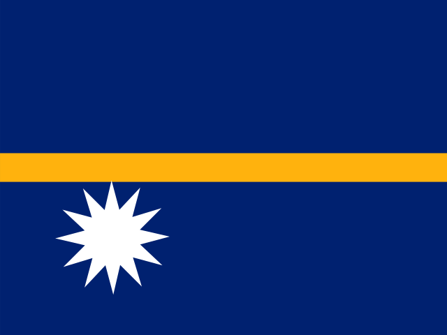

Nauru
Nauru is a parliamentary republic, located in Micronesia. Christianity is the predominant religion. Its capital is Yaren. About 12,025 people live there (2025).
- Capital
- Yaren
- Population
- 12,025 (2025)
- Region
- Oceania (Micronesia)
- Area
- 21 km²
- Demonym
- Nauruan
- Languages
- English, Nauruan
- Form of Government
- Parliamentary republic
- Religion
- Christianity (94.3%)
Non-religious (1.3%) - Currency
- Australian dollar (AUD)
- GDP
- $176.0M (2025)
Bordering countries
Nauru has no land borders.